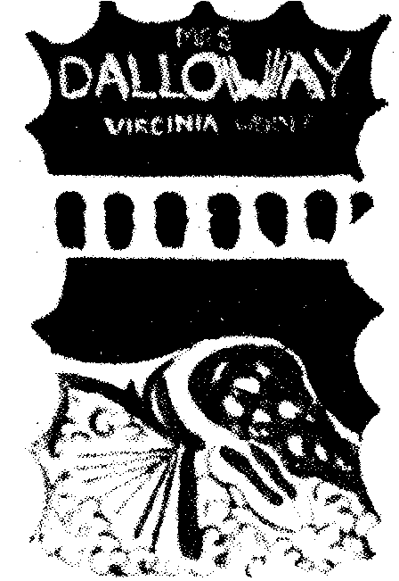
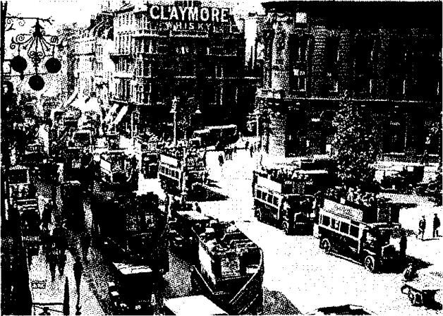
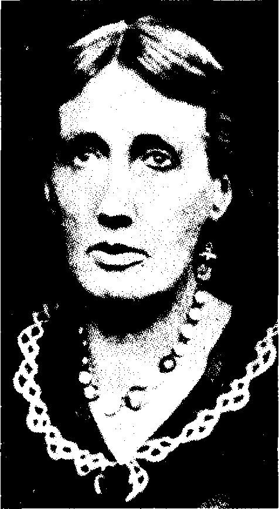

Bölüm 12
Mrs. Dalloway
Virginia Woolf, Jacob’s Room’da denediği kendine özgü yeni roman türünü, üç yıl sonra tam bir başarıyla uygulamaya koydu. 1925’de yayınlanan Mrs. Dalloway, Penguin baskısında ancak 214 sayfa tutan kısa bir romandır. Daha da kısa olan Jacob’s Room on üç bölüme ayrılmışken, Mrs. Dalloway’de böyle bir bölünme yoktur. Çok ender olarak kimi paragraflar arasında bir tek boş satır bırakılır sadece. İleride göreceğimiz gibi, hem şimdiki zamanla geçmiş zaman, hem de bu zaman dilimlerindeki kişiler arasında bağlantılar öyle iç içedir ki, Mrs. Dalloway’in bölünmez bir bütün oluşturması zaten gerekmektedir. Bu bölünmez bütün, Jacob’s Room’un bölük pörçüklüğünden tümüyle arınmış, kusursuz bir yapıdır. Biçimsel açıdan bir önceki romandan kat kat üstün olduğu gibi, kişileri çizmek açısından da kat kat üstündür. Jacob sisler arasında kalırken, Clarissa Dalloway ve romanın öteki kişileri gözümüzün önünde tam anlamıyla canlanırlar. Onları görür gibi, seslerini duyar gibi oluruz. Bunun nedeni, yazarın, Jacob’s Room’da yaptığı gibi, kişiler konusunda yalnız başkalarının kopuk kopuk izlenimlerini vermekle kalmayıp; o kişileri bize hep göstermesi, akıllarından geçenleri de bize sürekli aktarmasıdır.

Mrs. Dalloway’in kapağı için çizim, Vanessa Bell, 1925.
Jacob’s Room da tasarladıklarını uygulamaya geçiremeyen Virginia Woolf, Mrs. Dalloway’yi yayınlamadan üç yıl önce, 1922 güncesinde, yazacağı yeni romanda neler amaçladığını anlattı. Deliliği ve intiharı inceleyecekti; aklı başında olanların dünyayı nasıl gördüklerini ve akıl hastalığı olanların nasıl gördüklerini anlatacaktı. Bunun dışında büyük amaçlar da güdüyordu bu romanda: “I want to criticize the social system and to show it at work at its most intense” (Toplumsal düzeni eleştirmek, bu düzenin en yoğun biçimiyle nasıl işlediğini göstermek istiyorum) diyordu.
Bu yeni romanını yazarken, Virginia Woolf, yalnız büyük amaçların değil, yeni tekniklerin de peşindeydi. Güncesinde Mrs. Dalloway üzerinde çalışırken, şimdiki zamanla geçmiş zamanın iç içeliğini verebilmek amacıyla “tunelling process” (tünel açma süreci) dediği yöntemi, ancak bir yıl uğraştıktan sonra keşfedebildiğini yazar. Bu süreç sayesinde, kişilerinin benliğinde “mağaralar” (“caves”) açar; bu mağaraları tünellerle birbirilerine bağlayarak, o kişilerin bugünüyle geçmişi arasında bağlantılar kurar.
Virginia Woolf, kişisel sorununu, yani yaşamını zehirleyen, sonunda kendini öldürmesine neden olan delilik sorununu, yazdığı dokuz roman arasında ancak Mrs. Dalloway’de ele aldı. Kitabı bitirdikten sonra da, Aralık 1924 güncesinden anlaşıldığı gibi, bunu yapmasının doğru olup olmadığı konusunda kuşkulara düştü. Delilik sahneleriyle Mrs. Dalloway sahneleri arasında bir kopukluk görüleceğinden; bu yüzden de eleştirmenlerin onu kitabı iyi kurgulamamakla suçlayacaklarından korktu. Oysa bu kuşkuları yersizdir; çünkü Septimus Warren Smith’in deliliğiyle Clarissa Dalloway’in ruh sağlığı arasında, çok gizemli, ama belirgin bağlantılar vardır. Yazarın korkularının temelinde, roman tekniğiyle ilgili kaygılardan çok, kendi ruh hastalığının gizli ve karanlık dünyasına ışık tutmaktan çekinmesi vardır bize kalırsa. Bu konuda en doğru yargıyı gene E.M.Forster verir:
“It is a civilized book and it was written from personal experience. In her work, as in her private problem, she was always civilized and sane on the subject of madness. She pared off the edges of that particular malady, she tied it down to being a malady and robbed it of the evil magic it has acquired through timid or carelees thinking; here is one of the gifts we have to thank her for.”
(Uygar bir kitaptır bu ve kişisel deneyimlere dayanarak yazılmıştır. O kitaplarında olduğu gibi özel yaşamının sorunlarında da, delilik konusunu ele alırken her zaman uygar ve sağduyuluydu. Bu özel hastalığın sivri köşelerini törpüledi; bunun da bir hastalık olduğunu saptadı. Çekingen ya da dikkatsiz düşünenler yüzünden bu hastalığa bağlanan uğursuz büyüyü yok etti. Onun bize verdiği armağanlar arasında bunu da hesaba katıp, şükran duymalıyız ona.)
Mrs. Dalloway bir tek günde, bir tek kentte geçtiği; bir tek başkişiyi değil, iki başkişiyi ele aldığı ve bilinç akımını kullandığı için, Virginia Woolf’u James Joyce’un etkisinde kalmakla suçlayanlar oldu. Çünkü Ulysses de bir tek kentte, bir tek günde geçer; o kitapta da iki başkişi vardır ve bilinç akımı kullanılır. Ama bunların dışında, Mrs. Dalloway ile Ulysses arasında en küçük bir benzerlik yoktur. Tek gün, tek kent ve iki başkişi benzerliği tümüyle yüzeyseldir. Mrs. Dalloway’in ne genel havası, ne anlatımı, ne kişileri Ulyess’i andırır. Üstelik Virginia Woolf’un bilinç akımı, Joyce’unkinden bambaşkadır. James Joyce, bilinçten ve bilinçaltından geçenleri, hiç süzmeden, bir seçim yapmadan, olduğu gibi verir. Virginia Woolf ise, bambaşka bir yöntem kullanır. Hattâ buna bilinç akımı demek bile yanlıştır aslında. Çünkü kişilerinin ancak bilinçli olarak düşündüklerini, mantığa uygun bir sıralama içinde ve en önemlisi bilinçaltına hiç yer vermeden aktarır okuyucularına. Bunu belirtmek için de “she thought” ya da “he remembered” (düşündü, anımsadı) gibi açıklamalar yapar her zaman. Virginia Woolf’un kişilerinin iç monologu, Joyce’un bilinç akımından çok daha fazla, Marcel Proust’un iç monologunu andırır.
Mrs. Dalloway’de olay örgüsü denilecek bir şey yoktur. Başı sonu olan bir öykü de anlatılmaz. 1923 yılının Haziran ayında geçen bir günün yirmi dört saati değil, sabahtan geceye kadar aşağı yukarı on iki saati, sürekli olarak geçmişe de dönüşler yaparak ele alınır. Yazar bu romanına “The Hours” (Saatler) adını vermeyi düşünmüştü ilkin. Böyle bir ad çok yerinde olurdu aslında. Çünkü yazar, Londra meydanlarının büyük saatlerinin, özellikle Big Ben’in, çalmasından yararlanarak, her geçen saatin, hattâ her yarım saatin bilincinde olmamızı sağlar. Örneğin, Mrs. Dalloway’in hemen ikinci sayfasında, Big Ben’in sesi duyulur. Penguin baskısının 54’üncü sayfasında, Big Ben 11’i, sonra 11.30’u çalar. 79’uncu sayfada, romanın önemli ikinci kişisi Septimus Warren Smith, saatin 11.45’i çaldığını söyler. 130’uncu sayfada, Richard Dalloway öğleden sonra evine dönerken, saat 3’ü çalar. “The sound of Big Ben flooded Clarissa’s drawing-room” (Clarissa’nın salonuna, Big Ben sesi sel gibi aktı) denilir. 141’inci sayfada Big Ben gene çalar. Bu çalan saatlerin daha birçok örneğini verebiliriz. Romanın sonuna doğru da, Clarissa’nın konukları gitmek üzereyken “Saat çalmaya başladı. Delikanlı kendini öldürmüştü” (“The clock began striking. The young man had killed himself) denilir.
Çalan saatleri dinleyerek, romanın bellibaşlı kişilerinin ne yaptıklarını izleyebiliriz: Sabah erkenden, Clarissa Dalloway, akşam vereceği toplantıda salonlarını süsleyecek çiçekleri kendi eliyle seçmek için, çiçekçiye gider. Sokakta ahbaplarından Hugh Whitbread ile karşılaşır. Birinci Dünya Savaşında ağır bir şok geçirip depresyona giren Septimus Warren Smith adlı delikanlı, Milano’lu eşi Rezia denilen Lucrezia ile aynı sokaklarda gezinmektedir. Clarissa evine döndükten sonra, saat 11’de, eskiden ona âşık olan Peter Walsh onu görmeye gelir. Öğleyin Richard Dalloway, Hugh Whitbread ile birlikte, Lady Brouton’un evinde yemek yer. Saat 3’te kendi evine döner. Öğleden sonra, Clarissa’nın kızı Elizabeth ile, ona tarih dersi veren Miss Doris Kilman, büyük bir mağazada alışveriş ettikten sonra, bir pastaneye gidip çay içerler. Akşam saat 6’da, Septimus pencereden atlayarak kendini öldürür. Geceleyin Dalloway’lerin evinde bir toplantı yapılır. İşte Mrs. Dalloway’de olup bitenler bunlardır yalnız.
Romanın iki başkişisinden biri, yüksek sınıftan, ellisinde ev hanımı Clarissa Dalloway; öteki de aşağı orta sınıftan, savaş kurbanı küçük memur Septimus Warren Smith adlı otuz yaşlarında bir delikanlıdır. Bambaşka dünyalardan gelen bu iki insan, hiçbir zaman karşılaşmazlar. Septimus, Clarissa adlı bir kadının var olduğunu bile bilmez. Ama Clarissa Dalloway, yüzünü görmediği, adını bile bilmediği kendini öldüren bu delikanlıyla özdeşleşir romanın sonunda. Ne var ki, bu özdeşleşmeden önce, ikisinin de yaşadığı kent olan Londra, Clarissa ile Septimus’u birleştirir sanki. Romanın başlangıcında, aynı anda, aynı yerde bulunurlar bir ara. Clarissa bir çiçekçide alışveriş yaparken, Septimus da aynı sokaktadır. Bir otomobil lastiğinin patlamasıyla ikisi de irkilir. İçinde çok önemli bir devlet adamı ya da kral ailesinden birinin bulunduğu perdeleri inik limuzini ikisi de görürler. Havada dumandan harflerle reklam yazıları yazan uçağı ikisi de seyrederler.
Romanın üçüncü önemli kişisi Peter Walsh ile Septimus ve karısının yolları da kesişir. Peter, Regent’s Park’ta, yerden çakıl taşları toplayan bir küçük kızı seyreder. Bu küçük kız, Septimus’un eşi Rezia’nın bacaklarına dolanıp yere düşer. Peter, ağlayan çocuğu oyalamak için, yeleğinin cebinden çıkardığı saati gösterir ona. Rezia, bu gri kostümlü orta yaşlı adamın ne iyi yürekli olduğunu düşünür. Septimus’un çevresini savaşta ölenler sık sık sardığı için, Peter Walsh’ı da onlardan biri sanır. Peter ise, Septimus’un kendi kendine söylendiğini ve Rezia’nın üzüntülü halini görünce, onların kavga ettiklerini; Clarissa Dalloway orada olsaydı, bu genç çiftle konuşup, onların arasını bulacağını, belki de onları mutlu edebileceğini düşünür. Septimus ile Clarissa arasındaki gizemli bağlantı, romanın daha başlangıcında kurulmuş olur böylece. Çok eskiden ölen sevgilisine aşkını dile getiren bir şarkıyı söyleyen yaşlı dilenci kadını Peter de dinler, Septimus ile karısı da. Peter, dilenciye para verir. Septimus’u ünlü ruh doktoru Sir William Bradshaw’ya götürmekte olan Rezia ise bu yaşlı kadına acır. Daha sonraları, saat 6’da oteline dönmekte olan Peter, pencereden kendini atan Septimus’un ölüsünü götüren cankurtaran arabasının siren sesini duyar. Böyle bir örgütlenmenin ne denli yararlı olduğunu düşünüp, kendi kendine “one of the triumphs of civilization” (uygarlığın zaferlerinden biri) demesinde acı bir istihza vardır. Çünkü o uygarlık hiç de uygar değildir aslında ve savaş kurbanı Septimus Warren Smith’in ölüsünü taşımaktadır o cankurtaran arabası.
Mrs. Dalloway’in kişileri arasında böyle bağlantılar kuran Londra kenti canlı bir varlıktır bu romanda. Tıpkı Virginia Woolf’un kendisi gibi, Clarissa da Londra’yı coşkuyla sever. Kentin sokaklarını en güzel kırlardan daha güzel bulur. Arabaları, otomobilleri, otobüsleri, kamyonları seyrederken; parklardan gelen bando seslerini, sokakta laterna çalıp para toplayanları dinlerken, “What she loved; life, London, this moment of June” (Sevdiği bunlar; yaşam, Londra, Haziran ayının şu an’ı) diye düşünür. Beş yıl İngiltere’den uzak kalan Peter Walsh da Londra’yı sever. Ağaçlı küçük bir meydanın ıslak görünen ışıltılı yapraklarını “suların altında bir kentin” (“a submerged city”) yapraklarına benzetip, bu güzellik karşısında hayran kalır.
Clarissa Dalloway ile Septimus Warren Smith, bir ara Londra’nın aynı sokağında bulunurlar, aynı şeyleri görüp duyarlar. Ama aralarındaki gizemli bağ çok daha derindir. Çünkü ikisi de, Shakespeare’den aynı dizeleri anımsayıp dururlar bütün roman boyunca. Othello’nun sözleri “Now to die, twere now to be most happy” (Şimdi ölmek, şimdi çok mutlu olabilmek demektir) hem Clarissa’nın, hem de Septimus’un aklındadır. Cymbeline’daki “Fear no more the heat of the sun” (Güneşin sıcaklığından artık korkma) diye başlayan ağıtını ikisi de hep anımsarlar; bu dizeyi kendi kendilerine yüksek sesle söylerler zaman zaman. Clarissa, akşam giyeceği giysinin sökülmüş bir yerini dikerken “Fear no more says the heart committing its burden to some sea which sighs collectively for all sorrows” (Artık korkma diyor yürek, bütün kederler için topluca iç çeken bir denize bırakarak yükünü) diye düşünür. Septimus ise, dikiş diken karısına bakarken, “The sound of water was in the room and through the waves came the voices of birds singing... Fear no more says the heart to the body; fear no more” (Su sesleri vardı odada ve dalgaların içinde ötüşen kuşlar duyuluyordu... Artık korkma diyor yürek bedene; artık korkma) diye düşünür. Clarissa ile Septimus, birbirilerini yankılarcasına Shakespeare’in ağıtını düşünmekle kalmazlar; yıllar sonra Virginia Woolf’un yaşamına son verecek sularla ilgili imgeler de hep vardır ikisinin de aklında.
Mrs. Dalloway’de şimdiki zamanla geçmişin iç içe olduğunu söylemiştik. Romanın hemen başında görürüz bunu. Clarissa çiçek almak için sokağa çıktığı sırada, hava çok güzeldir. “Kumsalda çocuklara sunulan bir sabah kadar tazedir” (“A morning fresh a if issued to children on a beach”); “bir dalganın öpücüğü kadar serin ve keskindir” (“the kiss of a wave, chill sharp”). Bu güzel hava, Bourton’daki yazlık evlerini, on sekiz yaşında olduğu günleri ve ona çılgınca âşık olan Peter Walsh’ı anımsatır Clarissa’ya.
Eve dönünce de, Hindistan’dan ansızın gelen Peter, saat 11’de onu görmeye gelir. Beş yıldır birbirilerinden uzak kalmışlardır. Peter, heyecandan titreyerek, Clarissa’nın ellerini öper. Bir süre sonra, cebinden çakısını çıkarır, çakıyla oynamaya başlar. Duygulanınca ya da bir sorunla karşılaşınca her zaman bunu yapar. Romanın sonuna doğru, eskiden sevdiği kadının evindeki toplantıya giderken de, “The soul must brave itself to endure” (Dayanabilmek için, ruh kendini yiğitleştirmeli) diye düşünerek, cebinden çıkardığı çakısını açar kapar. Toplantıda Sally Seton ile Clarissa’dan söz ederken çakısıyla oynar gene. Peter Walsh’ı gözümüzün önünde canlandıran bir tiktir bu.
Peter, otuz yıl önce sevdiği Clarissa’nın ona nasıl sırt çevirdiğini anımsayınca, derin bir kedere kapılır. “Kederi, batan güneşin ışığını taşıyan korkunç ve güzel bir ay gibidir” (“His grief vhich was like a moon... ghastly and beautiful with light from the sunken day”). Çektiği acı öyle yoğundur ki, utanma duygusuna kapılmadan, gözyaşlarını gizlemeye çalışmadan, hüngür hüngür ağlamaya başlar. Clarissa eğilir, onun elini tutar, onu öper. Bunu yaparken, sevinç içindedir. Onunla evlenseydi belki de her zaman böyle sevinçli olabileceğini düşünür ansızın.
Hindistan’a yerleşmiş bir İngiliz ailesinin oğlu olan Peter Walsh, herkesin görür görmez sevdiği, hem çok cana yakın, hem de çok kültürlü bir insandır. Parlak bir geleceği olan bir genç sanılmıştır. Oysa bu umutlar boşa çıkmış; kişisel yaşamında da, meslek yaşamında da başarılı olamamıştır. Şimdi ellisini geçmişken, Parlamento üyesi Richard Dalloway’den, küçük bir devlet memurluğu ya da bir okulda Latince öğretmenliği isteyecek durumdadır. İngilizlerin “the establishment” dedikleri “kurulu düzene” uyamamış, her zaman “the solitary traveller” yani tek başına yolculuk eden biri kalmıştır. Hindistan’a giderken, gemide tanıdığı bir kızla evlenmiş; evliliği yürümemiştir. Şimdi de evli barklı, iki küçük çocuğu olan yirmi dört yaşındaki Daisy, babası yaşındaki Peter Walsh’a âşıktır. Eşinden boşanıp, onunla evlenmek istemektedir. Peter, bu boşanma işini halletmek için İngiltere’ye dönmek zorunda kalmıştır. Ne var ki, Peter, yeniden evlenmeye pek gönüllü görünmez. Daisy’nin aklını başına toplamasını, bu sevdadan vazgeçmesini çok daha doğru bulur.
Peter Walsh, ancak bir tek kadını, ancak Clarissa’yı sevmiştir. Clarissa’nın onu reddedip, buruk bir alaycılıkla “eşsiz Richard” (“the admirable Richard”) dediği Richard Dalloway ile evlenmesiyle, Peter’in hayatı kaymıştır. Romanın sonunda, hem Clarissa’nın, hem de kendisinin arkadaşı olan Sally Seton’a bunu itiraf eder: “His relations with Clarissa had spoiled his life, he said. One could not be in love twice, he said.” (Clarissa ile ilişkileri yaşamını bozmuştu, dedi. İnsan, iki kez âşık olamıyor, dedi). Clarissa, Richard’dan çok Peter’i sevmiştir Sally’ye kalırsa. Ama her düşünceyi, her duyguyu derinliğine kurcalayan, onunla her şeyi paylaşmak isteyen Peter’den ve Peter’in tutkusundan korkmuştur. Peter’in onun benliğine el koyacağı, onu mahvedeceği korkusuna kapılmıştır. Sürekli tartışmışlar, sürekli kavga etmişlerdir bu yüzden. Peter, Clarissa’yı, herkesçe kabul edilen geleneklere ve görüşlere fazlasıyla bağlı olmakla suçlamıştır. İleride başbakan olabilecek “kusursuz bir beyefendiyle” (“a perfect gentleman”) evlenip, kusursuz bir ev hanımı olacağını; aşağıda bekleyen ünlü konuklarının yanına inerken, merdivende poz vereceğini söylemiştir ona. Sally Seton ise, o kusursuz beyefendilerin Clarissa’nın “ruhunu boğacakları” (“stifle her soul”) kaygısına kapılmıştır.
Richard Dalloway yazlık eve gelir gelmez, Clarissa’nın bu kusursuz gençle evleneceğini anlar Peter. Clarissa, bahçedeki çeşmenin yanında ondan ayrılacağını söyleyince, korkunç bir acı çeker. Ama acı çeken yalnız Peter değildir. Bu ikisinin ilişkisi öylesine çapraşıktır ki, Clarissa da daha sonraları Peter’in bir başkasıyla evlenmesinin acısını, “yıllarca yüreğine saplanmış bir ok gibi” (“for years like an arrow sticking in her heart”) taşır. Şimdi de, Peter’in bir genç kadına âşık olduğunu, o kadının boşanmasını sağlamak için İngiltere’ye geri döndüğünü öğrenince, onu hem ayıplar, hem de kıskanır. Gıpta da eder ona. Çünkü âşık olmak, birini tutkuyla sevmek, Clarissa’nın hiç bilmediği, bilmek de istemediği bir duygudur. Gençliğinde Peter’i istememesinin gerçek nedeni de budur bize kalırsa. Hele şimdi, Peter ellisini aşmışken, “that monster” (o canavar) dediği aşk tutkusuna kapılması dehşet uyandırır Clarissa’da. Clarissa, “aşkın, özgür olan her şeyi, doğru olan her şeyi yıktığına” (“love destroyed everything that was free, everything that was true”) inanır. “Horrible passion she thought, degrading passion” (iğrenç tutku diye düşündü, insanı küçük düşüren tutku!)
Ne var ki, Clarissa gençliğinde, Bourton’daki yazlık evde oturdukları sırada, aşk tutkusuna benzer bir duyguyu, bir erkeğe değil de, Sally Seton’a duymuştur. “Kadınlara âşık olmak” (“falling in love with women”) diye düşünür şimdi. Sally ile eski ilişkisinin aşk olup olmadığını sorar kendi kendine. Ama aslında bunun aşk olduğu konusunda hiçbir kuşkusu yoktur. Sally yere oturup, kollarını dizlerine sararak sigara içerken, Clarissa onu olağanüstü güzel bulmuştur. Sally ile beraberken öyle mutlu olmuştur ki, Othello gibi, hemen o an ölerek sonsuza değin mutlu kalmak istemiştir. Gözlerini hiçbir zaman Sally’den ayıramamıştır; başkalarını, Peter’i bile görmez olmuştur. Peter müthiş kıskanmıştır Sally’yi. İki kızın arasına girmek, dostluklarını bozmak istemiştir. Clarissa’nın “tüm yaşamının en güzel an’ı (“the most exquiste moment of her whole life”) Sally’nin bahçede, çiçek dolu bir saksının önünde onu dudaklarından öpmesidir:
“Sally stopped; picked a flower; kissed her on the lips... The others disappeared; there she was alone with Sally... The revelation, the religious feeling.”
(Sally durdu; bir çiçek kopardı; onu dudaklarından öptü... Ötekiler yok oldu; orada Sally ile baş başaydı... Bir giz açığa çıkmıştı, dinsel bir duyguydu bu.)
Sally Seton, çevresinin benimsediği kurallara hep boyun eğen uslu Clarissa’ya hiç mi hiç benzemeyen, geleneklere ve törelere hiç aldırmayan bir kızdır. Yerlere oturur; yalnız sigara değil, puro bile içer; gece yarıları gölde sandalla gezinir; banyoya giderken bir şey unutursa, onu almak için yazlık evin koridorlarında çırılçıplak koşar; mülkiyeti ortadan kaldırmak için bir dernek kurmayı önerir; Büyük Britanya burjuvazisine, soylu sınıfa ve varlıklılara ateş püskürür; kadınların özgürlüğünü savunur. Oysa, “vahşi, gözüpek, romantik Sally” (“the wild, the daring, the romantic Sally”) tıpkı Cla-rissa gibi geleneklere uygun bir evlilik yapar. Üstelik Manchester’de fabrikaları olan çok varlıklı kel bir adamla evlenir; beş oğlan çocuğu doğurur. Bunca değişiklik karşısında şaşırıp kalan Peter Walsh ile konuşurken de, çok mutlu olduğunu söyler, kocasıyla övünür: Kocası bir maden işçisinin oğluymuş; kazandığı her kuruşu ve sonunda Lord unvanını alnının teriyle elde etmiş; küçücükken sırtında koskocaman çuvallar taşımış vb. Artık Lady Rossiter adını taşıyan Sally Seton, bir rastlantı sonucu Londra’dayken, eski arkadaşı Clarissa’nın bir parti vereceğini duymuş; çağrılmadığı halde gelmiştir. Yıllar Sally’yi öyle değiştirmiş, çekiciliğini öylesine yok etmiştir ki, Clarissa onu ancak sesinden tanıyabilir.
Sally, o güne değin savunduğu inançlara ve düşüncelere tümüyle ters düşen bir evlilik yapmadan önce, Richard Dalloway ile evlendiği için Clarissa’yı, çevresinin basmakalıp kurallarına ödün vermekle suçlamıştı. Richard’ın üstün bir zekâsı olmadığından, kabineye aslâ giremeyeceğini de söylemişti. Gerçekten de Richard Parlamento üyesi olmuş, ama bakan olamamıştır. Muhafazakâr partiden olmasının nedeni, sürekliliği sevmesi, geçmişin geleneklerini yeni kuşaklara teslim etmekten hoşlanmasıdır. Her şeyden hoşnuttur. Büyük bir çağda yaşadığını, kendi yaşamının da bir mucize olduğunu düşünür. Richard, sıradan bir insandır. Renkli bir kişiliği, parlak bir yanı hiç yoktur. Ama efendidir, dürüsttür, iyi yüreklidir. Romanın sonunda, hiç kimsenin yüzüne bakmadığı konuklara ayrıca ilgi gösterir. Clarissa’ya büyük bir sevgisi vardır. Ona iyi bakmak, onu mutlu etmek için elinden geleni yapar. Ama donuk bir insandır; duygularını açığa vuramaz. Lady Brouton’daki öğle yemeğinde, eskiden Clarissa’ya deliler gibi tutkun olan Peter Walsh’ın Hindistan’dan geri döndüğünü öğrenir. Acaba Clarissa benden çok Peter Walsh’ı mı sevmişti diye bir kuşku vardır içinde öteden beri. Bu yüzden de Peter’in Londra’ya geldiği haberini alınca, Clarissa’yı hemen görmek, ona seni seviyorum demek isteğine kapılır. Bir yığın gül alıp, beklenmedik bir saatte evine gider bunu söylemek amacıyla. Ama bir şey söyleyemez. Karısının elini tutup, yanında oturmanın mutluluğuyla yetinir. Clarissa ile evlenebilmesinin bir mucize olduğunu bir kez daha düşünür.
Clarissa kocasını beğenir, ona karşı sevecendir. Richard’da “an adorable, divine simplicity” (tapınılası, tanrısal bir sadelik) vardır Clarissa’ya bakılacak olursa (Bizler ise, Richard Dalloway’in “simplicity”sinin sadelik mi, yoksa basitlik mi olduğunu sorarız kendimize). Clarissa’ya göre, Peter ve kendisi gibileri birbirileriyle ve kendi kendileriyle didişirken, tutucu olmasına karşın Richard ezilenleri savunmuş, herkese iyilik etmek için uğraşıp durmuştur. Ne var ki, Clarissa kocasına âşık değildir ve onun yanındayken, korkunç bir mutsuzluğa kapıldığı anlar da olur:
“But why -but- why did she suddenly feel, for no reason that she could discover, desperately unhappy? As a person who has dropped some grain of pearl or diamond into the grass and parts the tall blades, very carefully here and there vainly.”
(Ama niçin -ama- niçin keşfedemediği bir nedenden ötürü böyle ansızın kendini umarsızca mutsuz hissediyordu? Bir inci tanesini ya da bir pırlantayı otlann arasına düşürüp, uzun bitkileri büyük özenle ayırarak, şurasını burasını boşuna arayan bir insan gibiydi.)
Clarissa kocasına âşık değildir. Ama onu bir “icicle” (buz sarkıtı) kadar soğuk bulan Peter Walsh’a da, hiçbir erkeğe de âşık olmamıştır. Kocasının üzülerek anımsadığı gibi, ona armağan ettiği bileziği bir tek kez bile koluna takmamış, sağlık durumunu bahane ederek ayrı odada yatmıştır. İstanbul’da bulundukları sırada da (Böylece Dalloway’lerin bir ara Türkiye’ye geldiklerini öğreniriz), daha sonraları da, cinsel açıdan kocasına soğuk davranmış, onu düş kırıklığına uğratmıştır. Bir kadının bir erkeğe doğal olarak duyduğu cinsel sıcaklıktan yoksun olduğunu kendi de biliyordur. Clarissa, tıpkı onu yaratan Virginia Woolf’a benzer bu açıdan. “Çocuk doğurduğu halde koruduğu bâkireliğini yok edemez” (“She could not dispel a virginity preserved through childbirth”). Ne var ki, daha önce de bildirdiğimiz gibi, gençliğinde Sally Seton’a âşık olmuştur. Şimdi de aynı duyguyla, kadınlara kapıldığı olur:
“She could not resist sometimes yielding to the charm of a woman, not of a girl, of a woman... She did undoubtedly feel then what men felt. Only for a moment; but it was enough. It was a sudden revelation... For that moment she had seen an illumination.”
(Bir kadının - bir kızın değil, bir kadının çekiciliğine karşı koyamadığı anlar olurdu... Hiç kuşkusuz, erkeklerin duyduklarını duyardı o anlarda. Ancak bir andı bu. Ama yeterdi. Bir giz ansızın açığa çıkardı... Bir aydınlanmaydı o an.)
Mrs. Dalloway’de Richard Dalloway’in ne biçim bir insan olduğunu anlarız; çok daha karmaşık bir kişiliği olan Peter Walsh’ı da anlarız. Ama Clarissa Dalloway nasıl bir insandır? Bu konuda kesin yargılar veremeyiz, Clarissa şöyle ya da böyledir diyemeyiz. Erkeklere cinsel soğukluğunu, kadınlara eğilimini bildiğimiz gibi, kimi özelliklerini biliriz ancak. Onu yaratan Virginia Woolf’tan farklı olarak, Clarissa Dalloway aydın sayılabilecek bir kadın değildir. Kendi de bunun bilincindedir:
“She knew nothing; no language, no history; she scarcely read a book now, except memoirs in bed... Her only gift was knowing people almost by instinct.”
(Hiçbir şey bilmiyordu; yabancı dil bilmiyordu, tarih bilmiyordu; yatakta okuduğu anılar dışında pek kitap okumuyordu artık... Nerdeyse içgüdüleriyle insanları bilmekti tek yeteneği.)

Clarissa Dalloway’in sevgili Londra’sından bir görünüm: 1923’te Strand’de otobüs trafiği.
İnsanlara, onları hemen anlayabilecek kadar yakınlık duymak, gerçekten büyük bir yetenektir. Ne var ki, Clarissa’nın önemli bir siyaset adamının eşi olarak sürdüğü anlamsız yaşam, hem kendi verdiği, hem de gitmek zorunda kaldığı o yemekler, o çaylar, o toplantılar kafasının gelişmesini engellemiş, “ruhunun ölümüne” (“the death of her soul”) neden olmuştur Peter Walsh’a bakılacak olursa. Kültürsüzlüğü dışında başka kusurları da olduğunu Clarissa kendisi itiraf eder. Örneğin, Lady Brouton’un, kocasıyla birlikte onu da öğle yemeğine çağırmamasına bir hayli içerler. Peter Walsh ve Sally Seton gibi en yakın arkadaşları, onu snob olmakla suçlarlar. Peter Walsh’ın anlattığına göre, gençliklerinde tanıdıkları bir adam hizmetçisiyle evlenmiş, evlenmeden önce de kadın hamile kalmış. Clarissa bunu duyunca, o kadınla artık asla görüşemeyeceğini söylemiş. Peter, geleneklere fazlasıyla bağlı yetiştirilmesine bağlar Clarissa’nın bu tepkisini. Sally’ye göre de, Clarissa, snob’luğundan ötürü Richard Dalloway ile evlenmiştir. Olağanüstü çekiciliğine karşın, Clarissa’da bir eksik yan vardır; ama Sally bu eksikliğin ne olduğunu kestiremez.
Peter ile Sally’nin eleştirilerinde bir gerçek payı olabilir. Çünkü Clarissa çelişkiler içindedir. Bir yandan insanlara, hiç tanımadığı insanlara bile yakınlık duyar; onların iç dünyalarını görür, akıllarından geçenleri sezer. Bir yandan da hiç kimseyle kaynaşomaz; Peter’in deyişiyle “içine nüfuz edilemez bir yanı” (“impenetrability”); bir soğukluğu vardır. Clarissa birbirilerine en yakın olmaları gereken insanlar arasında bile bir “uçurum” (“a gulf”) bulunduğunu; herkesin yalnız kaldığını bilir. Hatta insanın kendi bağımsızlığını yitirmemesi için, bu yalnızlığa saygı duyması gerektiğine inanır. Kendi penceresinden bakıp da karşıdaki evde oturan yaşlı kadını odasında görünce, “There was one room; here another. Did religion or love solve that?” (Orada bir oda var; burada başka bir oda. Din ya da sevgi bir çare buluyor nıu buna?) diye düşünür. Çok sevdiği Londra’nın trafiği ortasındayken bile, “kendini denizlerde, çok uzaklarda” (“far out to sea and alone”) hisseder.
Clarissa Dalloway’in başka bir çelişkisi de, hem en küçük şeylerden haz alarak yaşamı sevmesi, hem de tam anlamıyla kötümser olmasıdır. Peter Walsh’a göre, Clarissa şöyle düşünür:
“As we are a doomed race, chained to a sinking ship... As the whole thing is a bad joke, let us at any rate, do our part; mitigate the sufferings of our fellow-prisoners... Decorate the dungeon with flowers... Be as decent as we can... She evolved this atheist religion of doing good for the sake of goodness.”
(Batan bir gemiye zincirlenmiş, yok olmaya mahkûm bir soy olduğumuza göre... Bütün bunlar tatsız bir şaka olduğuna göre, hiç olmazsa payımıza düşeni yapalım. Birlikte hapsedildiğimiz insanların acılarını dindirmeye çalışalım... Zindanı çiçeklerle süsleyelim... Elimizden geldiğince iyi olalım... Tanrıya inanmayanlara özgü dini, iyilik uğruna iyilik yapmak dinini geliştirdi böylece.)
Gene Peter Walsh’dan öğrendiğimize göre, Clarissa’nın kız kardeşi Sylvia, düşen bir ağacın altında kalıp ölmüştür ikisi de çocukken. Clarissa, ne konuşurken, ne de düşünürken, buna hiç değinmez. Ama ölüm hep aklındadır; “birds on the tree of life” (yaşam ağacında kuşlar) diye nitelediği mutlu anlarında bile.
Ruhun ölümsüzlüğüne hiç inanmayan Clarissa, dünyanın bir parçası olduğu için benliğinden bir şeylerin kalacağına inanır gene de:
“Did it matter that she must inevitably cease completely?... Somewhere in the streets of London, in the ebb and flow of things, here, there, she survived... She being part, she was po-sitive, of the trees... Part of the people she had never met.”
(Tümüyle yok olmasının engellenememesinin bir önemi var mıydı?... Londra sokaklarında bir yerlerde, nesnelerin gelgitinde, şurada burada yaşıyordu gene... Ağaçların bir parçası olduğundan emindi... Hiçbir zaman tanımadığı insanların da...)
Virginia Woolf, Clarissa Dalloway’in kişiliğini tam olarak saptamaya kalkmaz. Çünkü geleneksel roman yazarlarından farklı düşünür; hiç kimsenin kişiliğini tamı tamına saptamanın yolu olmadığını bilir. Daha önce de belirttiğimiz gibi, gerçekçiliğin kurallarına uygun bir kişi değil, “gerçek” bir kişi çizmektir onun amacı. Bunu yapmayı da başarır. Romanın okuyucuları açısından, Clarissa Dalloway gerçek bir insandır, var olduğuna inandığımız bir insandır, gözümüzün önünde yaşamaktadır. Romanın son satırlarında, Peter Walsh’ın Clarissa Dalloway için düşündükleri, bizim düşüncelerimizi aynen yansıtır:
“What is the terror? What is the ecstasy? He thought to himself. What is it that fills me with extraordinary excitement? It is Clarissa, he said. For there she was”
(Bu müthiş korku nedir? Beni kendimden geçiren bu sevinç nedir? İçimi olağanüstü bir heyecanla dolduran nedir? Clarissa’dır, dedi. Çünkü işte oradaydı Clarissa.)
Mrs. Dalloway’de ikinci önemli kişi olan Septimus Warren Smith’e geçmeden önce, Clarissa’nın kızı Elizabeth’e, bu genç kıza özel tarih dersleri veren Doris Kilman’a ve Dallowaylerin aile dostu Hugh Whitbread’e kısaca değineceğiz. Bütün aile sarışın ve mavi gözlüyken, on yedi yaşındaki Elizabeth Dalloway esmerdir. Solgun yüzünde, “Çinli” (“chinese”) gözleri vardır. Aklından geçenleri neredeyse hiç bilmeyiz. Yazarın deyişiyle o, “an oriental mystery” (Bir Doğu gizidir). Elizabeth öyle güzeldir ki, onu sokakta gören yabancılara bile, şafak vaktini, yemyeşil ağaçları, tertemiz saydam suları, sümbülleri, zambakları anımsatır hemen. Romanın sonundaki toplantıda bir delikanlı, “She was like a lily, a lily by the side of a pool... She was like a poplar, she was like a river, she was like a hyacinth” (Bir zambak gibiydi, bir havuzun kenarında bir zambak gibiydi... Bir kavak gibiydi, bir ırmak gibiydi, bir sümbül gibiydi) diye düşünür. Erkeklerin ona tapmasına, Elizabeth’in fena halde canı sıkılır. Londra yaşamından, o çaylardan, yemeklerden, toplantılardan hiç hoşlanmaz. Babası ve köpekleriyle birlikte kırsal bölgede oturmak ister. Annesinden çok, babasına düşkündür.
Clarissa kızını sever; ama romandaki kişilerden birinin belirttiği gibi, analık duyguları onda fazla gelişmediğinden, derin bir sevgi değildir bu. Ancak, özel öğretmeni Doris Kilman’dan müthiş kıskanır kızını. “Kilman arrives... Elizabeth turns pink. They shut themselves up. I suppose they are praying” (Kilman geliyor... Elizabeth’in yüzü pembeleşiyor. Bir odaya kapanıyorlar. Dua ediyorlardır her halde) diye söylenir kendi kendine.
Virginia Woolf’un, Elizabeth Dalloway’den çok az söz ederken, Miss Kilman üstünde uzun uzun durmasının nedenini bilemeyiz. Lezbiyen duyguların çirkin bir yanını göstermek istemiştir belki de. Doris Kilman’ı yakından tanıdığı ve hiç sevmediği bir kadını örnek alarak da çizmiş olabilir. Kırk yaşında evde kalmış Miss Kilman’ı kötülemesi değil, ona acıması gerekirdi aslında. Çünkü bu çirkin ve yoksul kadıncağız, toplumsal adaletsizliğin bir kurbanıdır. Ailesi Alman kökenli olduğu için, her zaman haksızlığa uğramıştır. Erkek kardeşi Birinci Dünya Savaşında Büyük Britanya uğruna öldüğü halde, Almanlığı her zaman başına kakılmıştır. Doris Kilman gene de yüksek okullara gitmiş, diplomalar elde etmiştir; yani beğenilecek bir yanı vardır. Ama yazar, bu zavallıyı öyle olumsuz bir açıdan ele alır ki, okuyucuların da onu sevimsiz bulmamalarının yolu yoktur. Virginia Woolf’a bakılacak olursa, Miss Kilman, Clarissa’dan ne denli üstün olduğunu; metelik etmeyen Clarissa varlıklıyken, kendisinin ne denli yoksul olduğunu her an hissettirir öğrencisinin annesine. Clarissa gibi kadınları yalnız hor görmekle kalmaz, onun gibilerine kin besler. Lüks salonlarda keyfedeceklerine, fabrikalarda işçilik, dükkânlarda satıcılık etmeleri gerektiğini düşünür. Clarissa, kızını elinden almak için uğraşan, çevresine bunca kin duyan bu kadının aşırı dindar geçinmesine fena halde içerler. Üstelik, Doris Kilman’ın Elizabeth’e sağlıksız bir tutkusu vardır:
“If she could grasp her, if she could clasp her, if she could make her hers absolutely and for ever and them die; that was all she wanted.”
(Onu sıkı sıkı tutabilse, ona sarılabilse, onu kesinlikle ve sonsuza değin kendinin yapabilse ve sonra ölse. Tek istediği buydu.)
Ne var ki, Miss Kilman, bu umudunun aslâ gerçekleşmeyeceğini; bir ara etkisine giren Elizabeth’in artık ondan uzaklaştığını bilir. Genç kız, öğretmenini çay içtikleri yerde bırakıp evine geri döner. Miss Kilman, “She had gone. Mrs. Dalloway had triumphed. Elizabeth had gone; beauty had gone” (Gitmişti. Mrs. Dalloway zafer kazanmıştı. Elizabeth gitmişti; güzellik gitmişti) diye yakınır; bir kiliseye sığınıp dualar eder.
Virginia Woolf, Mrs. Dalloway üstünde çalışırken, kurulu düzeni kıyasıya eleştirmek istediğini yazmıştı güncesinde. Hugh Whitbread gibi bir adamı ele almasının nedeni de bu olsa gerek. Çünkü Dallowaylerin dostlarından Hugh Whitbread, kurulu düzenin tam bir temsilcisidir. Bu düzene uymamak açısından onun tam karşıtı olan Peter Walsh’a göre, Hugh Whitbread’de ne yürek vardır, ne beyin. Bir İngiliz centilmeninin özelliklerinden başka hiçbir şey yoktur onda. “Public school” denilen, ama ancak yüksek sınıftan erkek çocukların girebildiği o çok özel okulların kusursuz bir ürünüdür. Peter Walsh, Richard Dalloway için de kullandığı “admirable” (hayranlık uyandıran) sıfatını Hugh Whitbread için de kullanıp, adamcağızı alaya alır. Ne var ki, kişiliğini tümüyle yitirmiş ya da hiçbir zaman kişiliği olmamış Hugh Whitbread’in yanında, Richard Dalloway çok insan kalır. Hugh Whitbread’in, Kraliyet Sarayı’nda küçük bir memurluğu vardır. Nerede olursa olun, sarayda görev başındaymış gibi davranır. Canı pahasına sakladığı çok önemli gizler biliyormuş gibi haller takınır. Oysa herkesçe bilinen ıvır zıvır dedikodulardır bunlar. Times gazetesine, geri zekâlıların çok beğendikleri mektuplar yazar. Zaten siyasetle ilgilenen Lady Brouton, (Times’a yazdığı bir mektubu düzeltmesi için) onu Dalloway ile birlikte yemeğe çağırmıştır. Ama Peter Walsh, Whitbread’in gazetelere yazdığı mektupları okumaktansa, Hindistan ormanlarındaki maymunların çıkardıkları sesleri dinlemeyi yeğ tuttuğunu söyler. Virginia Woolf, herkese iyilik etmek iddiasında olan bu adama karşı öyle acımasızdır ki, bir genç kızı öldürdüğü için asılan bir haydudun bile, Hugh Whitbread gibi sözde iyilik edenler kadar zararlı olmadığına inanır.
Mrs. Dalloway’in ikinci önemli kişisi Septimus Warren Smith, Hugh Whitbread gibilerinin savundukları kurulu düzenin ve bu düzenin ayrılmaz bir parçası olan savaşın bir kurbanıdır. Virginia Woolf’un dediği gibi, Londra, Smith soyadını taşıyan milyonlarca delikanlıyı yutup yok etmiştir. Belki de annesiyle babası, oğullarını bu sıradan soyadından kurtarmak için, ona Septimus gibi ender duyulan bir ilk ad vermişlerdir. Septimus, öteki Smith’ler gibi yoksuldur. Ailesinden ayrılır, Londra’da bir iş bulur. Bir şirkette küçük bir memur olarak ekmek parasını kazanır. Akşamları da, Belediye kitaplıklarından ödünç aldığı kitapları okuyarak, halka açık konferansları dinleyerek, kendini yetiştirmeye çalışır. Güzel şeylere inanır, güzel şeyler yapmak ister. Şiir sever, şiir yazar. Şiir üzerine konuşmalar yapan bir bayana âşık olur bir ara. Birinci Dünya Savaşının başlangıcında, bu savaşa gönüllü olarak ilk katılanlardandır.
Ne var ki, savaşta yaşadığı acılar; yakın arkadaşı ve subayı Evans’ın ateşkes imzalanmadan tam bir gün önce yanıbaşında öldürülmesi, Septimus Warren Smith’i yıkar; onu bir ruh hastası haline getirir. En büyük karabasanı, kendisi gibi duyarlı bir insanın artık hiçbir şey hissetmemesidir. Evans’ın ölümü karşısında da hiçbir şey hissetmemekle suçlar kendini. Duygularını tümüyle yitirdiği paniğine kapılmışken, Milano’da tanıştığı Rezia ile evlenir. Savaş sırasında madalyalar kazandığı için, çalıştığı şirket onu bir kahraman gibi karşılar, ücretini arttırır. Ama eskiden ancak güzel şeylere inanan Septimus, insanların iyi ve merhametli olmadıkları kanısına varmıştır artık. Üstelik, arkadaşının ölümüne üzülmediği, âşık olmadan evlendiği için ve tam ne olduğunu bilmediği öteki cinayetleri yüzünden, insanlarca ölüme mahkûm edildiğini sanır.
Septimus, hezeyanları arasında, kimi zaman kendi kendisiyle, kimi zaman da ölen arkadaşı Evans ile yüksek sesle konuşur. Görülmeyen kişilere yanıtlar verir, onlarla tartışır, güler, ağlar. Aklından geçenlerin bir kısmını zarfların arkasına kendi yazar, bir kısmını da eski kâğıt parçalarına yazması için zorlar zavallı Rezia’yı. Ona, “men must not cut down trees. There is a God... Change the world. No one kills from hatred. Make this known” (İnsanlar ağaçları kesmemeli. Bir Tanrı var... Dünyayı değiştirin. Hiç kimse kin yüzünden öldürmez. Bunun bilinmesini sağlayın) gibi notlar dikte eder.
Septimus’un çevresini ölüler sarmıştır. Regents Park’ta otururken, bu ölülerden biri sandığı Peter Walsh’a gülümser. Ölüler, karşısındaki parmaklığın arkasında toplanmaktadır. Evans da onların arasındadır. Bir köpeğin bir insana dönüştüğünü görür. Kırmızı çiçekler fışkırır kendi bedeninden. Etrafını alevler sarar. O alevlerin arasına düşmemek için, karısının elini sıkı sıkı tutar. Duvarlardan çıkan sesler, ona korkunç küfürler eder; duvarlardan çıkan eller, alay ederek onu gösterir. Kimi zaman da, kuşlar ona adıyla seslenip, delirme nöbetleri sırasında Virginia Woolf’a söyledikleri Yunanca şarkıları söylerler. Septimus’un hezeyanlarında, Virginia Woolf’u boğacak olan sulara da sık sık değinilir:
“I leant over the edge of the boat, and fell down, he thought. 1 went under the sea... He was drowned, he used to say, and lying on a cliff with the gulls screaming over him. He would look over the edge of the sofa down, over the sea.”
(Sandaldan eğildim ve düştüm, diye düşündü. Denizin dibine gittim... Boğulmuştum derdi. Dik bir kayada yatıyorum; martılar üstümde çığlık çığlığa. Sedirin kenarından aşağılara, denize bakardı.)
Septimus’un hezeyanları arasında mutlu anlar da vardır. Örneğin, dumanlar salarak havada reklam yazıları yazan uçağı seyrederken, bunu, kendisine verilen uğurlu bir işaret sanır. Bu güzelliğin karşısında sevinçten gözleri dolar. Ne acıdır ki, Septimus, kendini tam öldürmeden önce, yalnız mutlu değil, aklı başına gelmiş gibidir. Hezeyanları bitmiştir. Artık var olmayan sesler duymuyor, var olmayan şeyler görmüyordur. Shakespeare’in “Fear no more” (Artık korkma) sözcükleriyle başlayan ağıtını -Clarissa Dalloway’in aklından hiç çıkmayan o ağıtı- düşünerek, tamamiyle normal bir insan gibi karısıyla konuşur; güler söyler. Bir mucize olmuş, Septimus delilikten kurtulmuştur sanki. Bütün roman boyunca, onu ancak bir tek kez böyle aklı başında görürüz. Yazdırdığı yazıların ve kendi yazdıklarının yakılıp yok edilmesini ister Rezia’dan. Ve tam o sırada, Septimus akıl dengesine kavuşmuşken, Dr. Holmes gelir. Ünlü ruh hastalıkları uzmanı Dr. Bradshaw’nun emri üzerine Septimus’u akıl hastahanesine kapatacaktır. Rezia, Dr. Holmes’un yukarı çıkıp Septimus’un yanına gitmesini engellemek ister. Ama adam, Rezia’yı iter, merdivenleri çıkmaya başlar. Septimus, ölümü pahasına da olsa, tımarhaneye kapatılmamaya kararlıdır. Önce ekmek bıçağını yüreğine saplamayı düşünür. Ama ev sahibinin güzel bıçağını kirletmeye gönlü râzı olamaz. Ocaktaki gazı açıp, kendini zehirlemeye de vakti yoktur. Tek çare, kendini pencereden atmaktır. Pencerenin kenarına oturur, bacaklarını aşağıya sarkıtır. “En son dakikaya kadar bekleyecekti. Ölmek istemiyordu. Yaşam güzeldi, güneş sıcaktı” (“He would wait until the very last moment. He did not want to die. Life was good, the sun was hot”) Ancak Dr. Holmes odaya girince atlar pencereden.
Dr. Holmes bu felaket karşısında, “eyvah!” diye bağırmaz, “korkak!” (“coward”) diye bağırır. Çünkü hekim geçinen bu adamın, Septimus’un ruh hastalığından haberi bile yoktur. Onun herkes gibi yaşamasını, golf oynamasını, müzikhollere gitmesini, gezip tozmasını ister. Karısının önünde kendini öldürmekten söz ettiği için, kızcağızı korkuttuğunu söylemiş, onu ayıplamış, azarlamıştır. Bu delikanlının ağır bir ruhsal çöküntü geçirdiğini hiçbir zaman anlayamamıştır. Ama bunu çok iyi anlayan ünlü psikiyatr Dr. Bradshaw, Septimus’u akıl hastanesine kapatmak isteyerek, onun ölümüne neden olur.
Virginia Woolf, Septimus Warren Smith olayını ele alırken, sıradan akılsız bir adam olan Dr. Holmes’dan çok, toplumun gözünde çok saygın bilinen, “Sir” unvanıyla onurlandırılan Dr. William Bradshaw üstünde durarak, hekimleri acımasızca taşlar. Bradshaw’ya öyle bir haşinlikle saldırır ki, herhalde kendi delilik nöbetlerinde, ruh uzmanı geçinen Bradshaw’ya benzer bir hekimin eline düşmüştür de o adamdan hıncını alıyordur diye düşünürüz elimizde olmadan. Dr. Bradshaw konusunda yazarın sözcülüğünü üstlenen Clarissa Dalloway, görünüşte çok nazik olan bu adamda “obscurely evil” (karanlık bir biçimde ahlâksız) bir şeyler sezer. Sir William Bradshaw’nun, hastalarının “ruhlarını zorlayarak” (forcing your soul”) onlara yapmayacağı kötülük yoktur. “They make life intolerable, men like that” (Yaşamı dayanılmaz hale getirir böyle adamlar). Nitekim Septimus, Sir William gibi bir adamın eline düşmeye dayanamamış, kendi canına kıymıştır. Clarissa’ya göre, bu hekim, insanları kapmak için “üstlerine saldırır, onları yer yutar, onları bir yerlere kapatır” (“he swooped he devoured, he shut people up”). Virginia Woolf, hiçbir kitabında hiç kimseyi böyle kıyasıya taşlamamıştır:
“Sir William not only prospered himself, but made England prosper, secluded her lunatics, forbade childbirth, penalised despair, made it impossible for the unfit to propagate their views.”
(Sir William yalnız kendi refaha kavuşmakla kalmadı, İngiltere’yi de refaha kavuşturdu. Ülkenin delilerini kapattı, çocuk doğumlarını yasakladı, acı çekmeyi cezalandırdı, uyumsuz olanların görüşlerini yaymalarını olanaksız hale getirdi.)
Clarissa Dalloway, romanın sonunda verdiği partinin çok sönük geçeceğinden korkar bir ara. Ama Başbakanın bile geldiği parti çok parlak olur. Yazar, kurulu düzeni taşlamak amacını uygulamaya koyarak, İngiliz yüksek sosyetesinin kimi ünlü kişilerini alaya almak fırsatını bulur böylece: Başbakan, önemli bir kişi izlenimi vermek için elinden geleni yaptığı halde, bir dükkânın tezgâhının arkasında durup bisküvi satacak kadar sıradan bir adamcağızdır. Royal Academy’nin yani ülkenin en saygın güzel sanatlar kurumunun üyesi olan bir ressam, ancak inek ve öküz resimleri yaparak bu görülmedik ününe kavuşmuştur. Herkesçe olağanüstü bir saygıyla sözü edilen ve Milton uzmanı geçinen yaşlı bir profesör, her konuda; hattâ kılık kıyafet konusunda bile öylesine bir tutuculuk içindedir ki, saçı biraz karışık genç bir kadın, ayakkabıları biraz eskimiş bir delikanlı görünce, korkusundan tir tir titremeye başlar, fenalıklar geçirir. Çünkü böylelerinin, “başkaldıran ateşli genç insanlar, dâhi olmaya özenen kişiler” olabileceği kuşkusuna kapılır. Peter Walsh, Clarissa’nın ev sahibesi olarak bu değersiz konuklarının her birini, geldiklerine çok sevindiğini söyleyerek karşılamasına çok içerler; İngilizlerin topunu snob olmakla suçlar. Ne var ki, Clarissa’yı, yeşil giysisiyle bir denizkızı kadar çekici bulur gene de. Yaşlanınca, daha sevecen, daha yumuşak, daha sıcak olduğunu ve başlıca yeteneğini, yani “var olmak” (“to be; to exist”) yeteneğini hâlâ koruduğunu düşünür.

Virginia Woolf Mrs. Dalloway’i tamamladığı sıralarda.
Clarissa, çok az tanıdığı ve hiç sevmediği Sir William Bradshaw’dan, bir delikanlının kendini öldürdüğünü, Bradshawların toplantıya bu yüzden geç geldiklerini öğrenir. İlk tepkisi bencilcedir. “In the middle of my party, here’s death” (Benim partimin ortasında, işte ölüm) diye düşünür. Bu ölüm haberi uluorta verildiği için, konukların keyfinin kaçacağından, partinin havasının bozulacağından korkar. Ama gelip geçici bir andır bu. Clarissa, ölen delikanlıyı düşündükçe, ona yakınlık duymaya, kendini onunla özdeşleştirmeye başlar.
Virginia Woolf’un Mrs. Dalloway’i yazarken, romanın sonunda Clarissa’nın intihar etmesini ya da doğal bir nedenle ölmesini planlamış olması ayrıca ilginçtir. Modem Library baskısına yazdığı önsözden biliyoruz bunu. Ne var ki, yazar bu ilk planından vazgeçmiş, Clarissa’nın yerine, Septimus Warren Smith’i intihar ettirmiştir. Böylece, Clarissa’nın alter ego’su, yani kişiliğinin öteki yanı yapmıştır bu delikanlıyı. Kendi ölmesi gerekirken, bu delikanlının öldüğünü hisseden Clarissa, kendini suçlar:
“She must have perished. She had escaped. But that young man had killed himself. Somehow it was her disaster - her disgrace. It was her punishment to see sink and disappear, here a man, there a woman, in this profound darkness, and she forced to stand here in her evening dress. She had schemed; she had pilfered. She was never wholly admirable. She had wanted success.”
(Kendi ölmeliydi. Ölümden kurtulmuştu. Ama o delikanlı kendini öldürmüştü. Her nedense, Clarissa’nın felâketiydi bu, Clarissa’nın rezil olmasıydı. Kendisi burada, gece elbisesiyle dikilip durmak zorundayken; şurada bir erkeğin, orada bir kadının, bu derin karanlıkta batıp yok oluşu, Clarissa’nın cezalandırılması demekti. Hesaplar kitaplar yapmıştı, küçük şeyler aşırmıştı. Tam anlamıyla hayranlık uyandıran bir kişi olamamıştı hiçbir zaman. Başarı istemişti.)
Her insanın yaşamında kıymetli bir öz vardır. Clarissa, bu kıymetli özü, küçük yalanlarla, gevezeliklerle mahvetmişti. Oysa, kendi canına kıyan o delikanlı, yaşamın kıymetli özünü koruyabilmişti:
“Death was a defiance. Death was an attempt to communicate... There was an embrace in death... If ‘twere now to die,’ twere now to be most happy.”
(Ölüm bir meydan okumaydı. Ölüm bir iletişim kurma çabasıydı... Ölümde bir kucaklama vardı... Şimdi ölmek, şimdi çok mutlu olmak demekti.)
Ölen delikanlının aklından geçen Shakespeare’in bu dizeleri, bundan önce Clarissa’nın aklından geçtiği gibi şimdi de geçer. Hiçbir zaman görmediği Septimus ile artık tam bir iletişim kurmuş, onunla kucaklaşmış, onunla özdeşleşmiştir. Öylesine özdeşleşmiştir ki, ona acıyacağı yerde, kendisinin yapamadığını bu delikanlının yapmış olmasna sevinir:
“The young man had killed himself; but she did not pity him... And the words came to her, fear no more the heat of the sun... She felt somehow very like him -the young man who had killed himself. She felt glad that he had done it; thrown it away while they went on living.”
(Delikanlı kendini öldürmüştü; ama ona acımıyordu. Clarissa’nın aklına geldi o sözcükler: Artık korkma güneşin sıcaklığından... Her nedense ona çok benziyordu- kendini öldüren delikanlıya. Bunu yapmasına seviniyordu; onlar yaşamayı sürdürürken, kendi yaşamını bir kenara atmasına seviniyordu.)